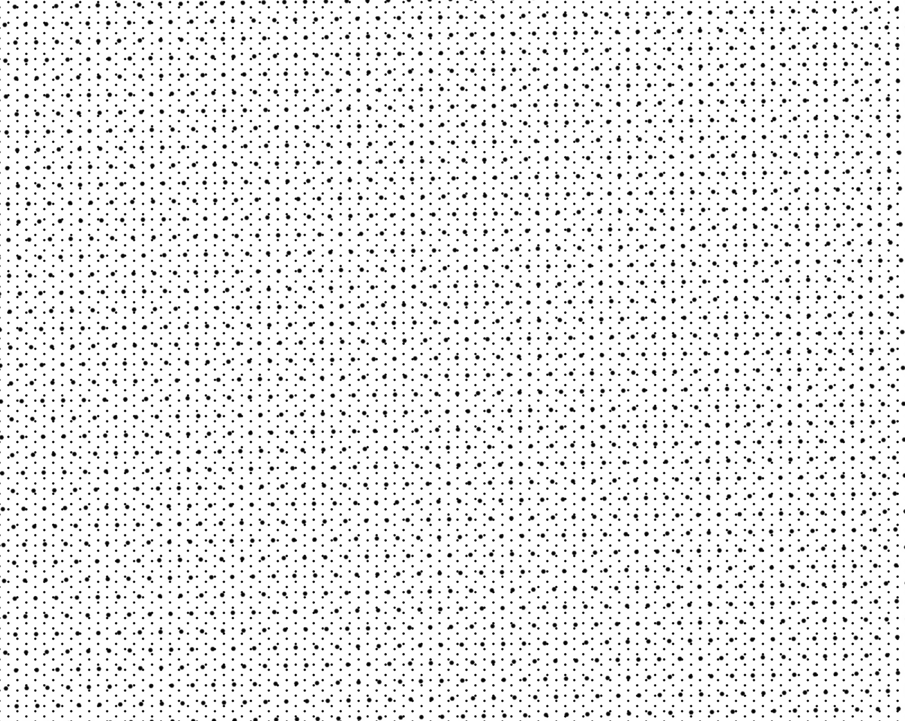

TRAMES
À la Fondation Vasarely à Aix-en-Provence, Etienne Rey a choisi d’installer dans la salle des Intégrations architectoniques un ballet visuel hypnotique.
«Trame instabilité» est un travail en cours de recherche. Le projet est basé sur des principes d’occultations partielles en couches associées à des trames qui font émerger une dimension immatérielle. L’expérience de perception de ces motifs produit un sentiment de basculement de la perception dans le sens où le motifs réel passe au second plan pour laisser place à l’émergence d’une figure du vide, c’est dans les blancs immatériel que des formes apparaissent et vacillent occupant tout notre champ visuel. Ces apparitions virtuelles, purs phénomènes optiques n’existent pas dans notre monde «physique», réel. «BR» Ce qui est en jeu ici c’est l’émergence de l’apparition de motifs virtuels résultat de la relation entre une réalité physique, la grandeur et l’ordonnancement de trames et notre physiologie qui conduit à cette état de perception. Lorsqu’on est fasse à ces motifs ce qui saute au yeux plus que le motif réel c’est sa résultante, instable et éphémère qui fait apparaitre une richesse de figures géométriques qui se transforment et évoluent en fonction du temps d’observation et du point de vue. Sur ce principe de dispositif optique, le travail de chacun des motifs, lié à un séquençage de trames conduit à faire apparaitre une composition et des émergences de formes spécifiques. L’expérience de perception de chacun des motifs explore les notions d’instabilité, de flux, d’émergences … dont l’expérience donne à entrevoir des formes que l’on retrouve dans la nature ou les phénomènes naturels: le dessin du pelage d’un zèbre, une accumulation de bulles de savons, ou plus généralement dans les compositions chimiques issue de la théorie de la morphogénèse de Turing.

En collaboration avec le chercheur Laurent Perrinet, CNRS-AMU / Institut de Neurosciences de la Timone.
- Trame, Élasticité & Écran n°3 étaient aussi présentés au Festival Ososphère, Strasbourg en Avril 2017.
Laurent U Perrinet
Researcher in Computational Neuroscience
My research interests include Machine Learning and computational neuroscience applied to Vision.